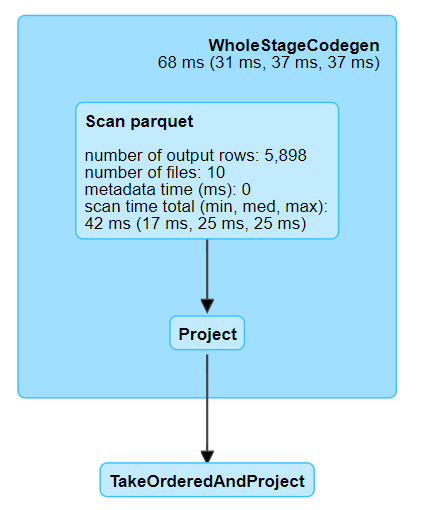

Optimising Joins
Contents
Optimising Joins¶
Joining DataFrames is a common and often essential operation in Spark. However, joins are one of the more expensive operations in terms of processing time. This is because by default both source DataFrames are first sorted, which is a wide transformation, causing a shuffle (or exchange). As such, it is worth paying extra attention to where joins occur in the code and trying to figure out which method to use to make them more efficient.
This article describes the different join algorithms in Spark, explains how they work, when to use them, and shows examples of each. It also covers replacing joins entirely with narrow transformations, and gives a brief overview of salted joins, that can be used when the data are skewed.
Before reading this article ensure that you understand how to join two DataFrames in Spark. Knowledge of shuffles and the difference between wide and narrow transformations will also help understanding of why some methods are faster than others, although not mandatory. Useful resources on this include the DataBricks Transformations definition, and the Spark Application and UI, Shuffling and Partitions articles in this book.
It is important to note that in this notebook when we talk about different joins and the way they are processed we are not talking about left, right, inner or outer joins, but how it is processed on the cluster. The result of the join will always be the same, regardless of which of the algorithms described in this article is used.
The Join Algorithms in Spark¶
You do not need to know how joins work when writing Spark code, but you can make them more efficient by understanding that there are different ways for them to be processed and coding appropriately. These are:
Shuffle Hash Join
Sort Merge Join
Broadcast Join
Other Methods
We will look at each in more detail, get a better idea of how they are processed by looking at the Spark UI. We will then compare them and give the advantages and disadvantages of using each.
Shuffle Hash Join¶
In the development of Spark, the shuffle hash join was the original join implementation.
This consists of two stages: shuffle and hash. First a shuffle, where data with the same keys from both DataFrames are moved to the same executors. Once all the data are on the relevant executors, they are joined using the hash join algorithm. This involves building a hash table in memory and may fail for some larger joins.
Shuffle hash joins will not be explored further as they have been superseded by sort merge join, which is similar apart from the processing stage.
Sort Merge Join¶
This is now the default method of joining two DataFrames in Spark.
It consists of two key stages, as suggested by the name: sort and merge.
First of all, the data in each DataFrame will be sorted. A sort operation requires a shuffle on each DataFrame. This will also ensure that all the same key values are on the same partition. This also means that the join can be done in parallel on each partition, although it can potentially be a problem if your data are skewed (in which case a salted join may be useful).
Now that both DataFrames are ordered, it is easy to iterate over each row in the DataFrames and see if they have a matching key; if they do, they can be returned as part of the resulting DataFrame. In most circumstances this will be more efficient than the shuffle hash join.
This diagram should help explain this visually:
Both sort merge joins and shuffle hash joins use a shuffle; the difference is in the processing stage, where the former uses a searching algorithm and the latter uses a hash table.
Sort Merge Join Example¶
Let us see an example of a sort merge join and then look at the plan and the Spark UI. The example uses the Animal Rescue (as CSV) and Population (as parquet) datasets, left joining on the postcode_district. Note that we are disabling automatic broadcast joins by setting spark.sql.autoBroadcastJoinThreshold to -1; broadcast joins are covered in the next section. First, start a Spark session, read the data and select and rename the relevant columns:
import os
import yaml
from pyspark.sql import SparkSession, functions as F
spark = (SparkSession.builder.master("local[2]")
.appName("joins")
# Disable broadcast join by default
.config("spark.sql.autoBroadcastJoinThreshold", -1)
.getOrCreate())
with open("../../../config.yaml") as f:
config = yaml.safe_load(f)
rescue_path = config["rescue_path_csv"]
population_path = config["population_path"]
rescue = spark.read.csv(rescue_path, header=True, inferSchema=True).select(
F.col("IncidentNumber").alias("incident_number"),
F.col("CalYear").alias("cal_year"),
F.col("AnimalGroupParent").alias("animal_group"),
F.col("PostcodeDistrict").alias("postcode_district"))
population = spark.read.parquet(population_path)
library(sparklyr)
library(dplyr)
joins_config <- sparklyr::spark_config()
# Disable broadcast join by default
joins_config$spark.sql.autoBroadcastJoinThreshold <- -1
sc <- sparklyr::spark_connect(
master = "local[2]",
app_name = "joins",
config = joins_config)
config <- yaml::yaml.load_file("ons-spark/config.yaml")
rescue <- sparklyr::spark_read_csv(sc, config$rescue_path_csv, header=TRUE, inferSchema=TRUE) %>%
sparklyr::select(incident_number = IncidentNumber,
cal_year= CalYear,
animal_group = AnimalGroupParent,
postcode_district = PostcodeDistrict)
population <- sparklyr::spark_read_parquet(sc, config$population_path)
Preview both DataFrames; we can see the desired join column, postcode_district, is present and contains data in a standard postcode format:
rescue.show(5)
population.show(5)
rescue %>%
head(5) %>%
sparklyr::collect() %>%
print()
population %>%
head(5) %>%
sparklyr::collect() %>%
print()
+---------------+--------+------------+-----------------+
|incident_number|cal_year|animal_group|postcode_district|
+---------------+--------+------------+-----------------+
| 139091| 2009| Dog| SE19|
| 275091| 2009| Fox| SE25|
| 2075091| 2009| Dog| SM5|
| 2872091| 2009| Horse| UB9|
| 3553091| 2009| Rabbit| RM3|
+---------------+--------+------------+-----------------+
only showing top 5 rows
+-----------------+----------+
|postcode_district|population|
+-----------------+----------+
| DH7| 41076|
| NW3| 52376|
| NR4| 22331|
| SO31| 44742|
| CT18| 14357|
+-----------------+----------+
only showing top 5 rows
# A tibble: 5 × 4
incident_number cal_year animal_group postcode_district
<chr> <int> <chr> <chr>
1 139091 2009 Dog SE19
2 275091 2009 Fox SE25
3 2075091 2009 Dog SM5
4 2872091 2009 Horse UB9
5 3553091 2009 Rabbit RM3
# A tibble: 5 × 2
postcode_district population
<chr> <dbl>
1 DH7 41076
2 NW3 52376
3 NR4 22331
4 SO31 44742
5 CT18 14357
We can now join these on PostcodeDistrict, using .join() with how="left" in PySpark or left_join() in sparklyr, then preview:
rescue_with_pop = (
rescue.join(
population,
on="postcode_district",
how="left")
)
rescue_with_pop.show(5)
rescue_with_pop <- rescue %>%
sparklyr::left_join(population, by="postcode_district")
rescue_with_pop %>%
head(5) %>%
sparklyr::collect() %>%
print()
+-----------------+---------------+--------+--------------------+----------+
|postcode_district|incident_number|cal_year| animal_group|population|
+-----------------+---------------+--------+--------------------+----------+
| SE17| 6259091| 2009|Unknown - Domesti...| 32866|
| SE17| 6317091| 2009| Cat| 32866|
| SE17| 17297091| 2009| Dog| 32866|
| SE17| 74801101| 2010| Squirrel| 32866|
| SE17| 64851111| 2011| Dog| 32866|
+-----------------+---------------+--------+--------------------+----------+
only showing top 5 rows
# A tibble: 5 × 5
incident_number cal_year animal_group postcode_district population
<chr> <int> <chr> <chr> <dbl>
1 93474091 2009 Dog DA15 29123
2 194165091 2009 Cat DA15 29123
3 126259101 2010 Cat DA15 29123
4 154461131 2013 Dog DA15 29123
5 36130141 2014 Bird DA15 29123
Note that the order of the DataFrame has not been preserved and that this preview has only given us rows with idential PostcodeDistrict values. This is due to two Spark concepts: lazy evaluation and the sort merge join algorithm. As the action only requires five rows to be returned, Spark can get all these from the first partition rather than having to return data from multiple partitions, ensuring that the job is completed faster. The sort merge join algorithm has sorted the DataFrame by the hashed join key, and put all these values in the first partition, and so these are the values that are returned. See the article on partitions for more information.
We know the result of the join, but to see how Spark actually processed the join we need to look at the plan. Remember that Spark has the concept of lazy evaluation, in which rather than process code line-by-line like in a pandas or base R DataFrame, we instead create a plan which gets executed on the cluster in one go when an action is called. We can see this plan with explain(), a DataFrame method in PySpark and dplyr function in sparklyr.
rescue_with_pop.explain()
rescue_with_pop %>% dplyr::explain()
== Physical Plan ==
*(5) Project [postcode_district#65, incident_number#62, cal_year#63, animal_group#64, population#71L]
+- SortMergeJoin [postcode_district#65], [postcode_district#70], LeftOuter
:- *(2) Sort [postcode_district#65 ASC NULLS FIRST], false, 0
: +- Exchange hashpartitioning(postcode_district#65, 200)
: +- *(1) Project [IncidentNumber#10 AS incident_number#62, CalYear#12 AS cal_year#63, AnimalGroupParent#20 AS animal_group#64, PostcodeDistrict#31 AS postcode_district#65]
: +- *(1) FileScan csv [IncidentNumber#10,CalYear#12,AnimalGroupParent#20,PostcodeDistrict#31] Batched: false, Format: CSV, Location: InMemoryFileIndex[file:/home/cdsw/ons-spark/ons-spark/data/animal_rescue.csv], PartitionFilters: [], PushedFilters: [], ReadSchema: struct<IncidentNumber:string,CalYear:int,AnimalGroupParent:string,PostcodeDistrict:string>
+- *(4) Sort [postcode_district#70 ASC NULLS FIRST], false, 0
+- Exchange hashpartitioning(postcode_district#70, 200)
+- *(3) Project [postcode_district#70, population#71L]
+- *(3) Filter isnotnull(postcode_district#70)
+- *(3) FileScan parquet [postcode_district#70,population#71L] Batched: true, Format: Parquet, Location: InMemoryFileIndex[file:/home/cdsw/ons-spark/ons-spark/data/population.parquet], PartitionFilters: [], PushedFilters: [IsNotNull(postcode_district)], ReadSchema: struct<postcode_district:string,population:bigint>
<SQL>
SELECT `incident_number`, `cal_year`, `animal_group`, `LHS`.`postcode_district` AS `postcode_district`, `population`
FROM (SELECT `IncidentNumber` AS `incident_number`, `CalYear` AS `cal_year`, `AnimalGroupParent` AS `animal_group`, `PostcodeDistrict` AS `postcode_district`
FROM `animal_rescue_67666c0b_5666_454a_b128_8abba6c315d5`) `LHS`
LEFT JOIN `population_51b44349_e2d4_4ccd_89d8_4e677ff4c61d` AS `RHS`
ON (`LHS`.`postcode_district` = `RHS`.`postcode_district`)
<PLAN>
plan
1 == Physical Plan ==\n*(5) Project [incident_number#1180, cal_year#1181, animal_group#1182, postcode_district#1183, population#783L]\n+- SortMergeJoin [postcode_district#1183], [postcode_district#782], LeftOuter\n :- *(2) Sort [postcode_district#1183 ASC NULLS FIRST], false, 0\n : +- Exchange hashpartitioning(postcode_district#1183, 16)\n : +- *(1) Project [IncidentNumber#71 AS incident_number#1180, CalYear#73 AS cal_year#1181, AnimalGroupParent#81 AS animal_group#1182, PostcodeDistrict#92 AS postcode_district#1183]\n : +- InMemoryTableScan [AnimalGroupParent#81, CalYear#73, IncidentNumber#71, PostcodeDistrict#92]\n : +- InMemoryRelation [IncidentNumber#71, DateTimeOfCall#72, CalYear#73, FinYear#74, TypeOfIncident#75, PumpCount#76, PumpHoursTotal#77, HourlyNotionalCostGBP#78, IncidentNotionalCostGBP#79, FinalDescription#80, AnimalGroupParent#81, OriginofCall#82, PropertyType#83, PropertyCategory#84, SpecialServiceTypeCategory#85, SpecialServiceType#86, WardCode#87, Ward#88, BoroughCode#89, Borough#90, StnGroundName#91, PostcodeDistrict#92, Easting_m#93, Northing_m#94, ... 2 more fields], StorageLevel(disk, memory, deserialized, 1 replicas)\n : +- *(1) Project [IncidentNumber#19, DateTimeOfCall#20, CalYear#21, FinYear#22, TypeOfIncident#23, PumpCount#24, PumpHoursTotal#25, HourlyNotionalCost(£)#26 AS HourlyNotionalCostGBP#78, IncidentNotionalCost(£)#27 AS IncidentNotionalCostGBP#79, FinalDescription#28, AnimalGroupParent#29, OriginofCall#30, PropertyType#31, PropertyCategory#32, SpecialServiceTypeCategory#33, SpecialServiceType#34, WardCode#35, Ward#36, BoroughCode#37, Borough#38, StnGroundName#39, PostcodeDistrict#40, Easting_m#41, Northing_m#42, ... 2 more fields]\n : +- *(1) FileScan csv [IncidentNumber#19,DateTimeOfCall#20,CalYear#21,FinYear#22,TypeOfIncident#23,PumpCount#24,PumpHoursTotal#25,HourlyNotionalCost(£)#26,IncidentNotionalCost(£)#27,FinalDescription#28,AnimalGroupParent#29,OriginofCall#30,PropertyType#31,PropertyCategory#32,SpecialServiceTypeCategory#33,SpecialServiceType#34,WardCode#35,Ward#36,BoroughCode#37,Borough#38,StnGroundName#39,PostcodeDistrict#40,Easting_m#41,Northing_m#42,... 2 more fields] Batched: false, Format: CSV, Location: InMemoryFileIndex[file:/home/cdsw/ons-spark/ons-spark/data/animal_rescue.csv], PartitionFilters: [], PushedFilters: [], ReadSchema: struct<IncidentNumber:string,DateTimeOfCall:string,CalYear:int,FinYear:string,TypeOfIncident:stri...\n +- *(4) Sort [postcode_district#782 ASC NULLS FIRST], false, 0\n +- Exchange hashpartitioning(postcode_district#782, 16)\n +- *(3) Filter isnotnull(postcode_district#782)\n +- InMemoryTableScan [postcode_district#782, population#783L], [isnotnull(postcode_district#782)]\n +- InMemoryRelation [postcode_district#782, population#783L], StorageLevel(disk, memory, deserialized, 1 replicas)\n +- *(1) FileScan parquet [postcode_district#782,population#783L] Batched: true, Format: Parquet, Location: InMemoryFileIndex[file:/home/cdsw/ons-spark/ons-spark/data/population.parquet], PartitionFilters: [], PushedFilters: [], ReadSchema: struct<postcode_district:string,population:bigint>
Spark plans can be tricky to read if you are not familiar with them but we can see some key terms being used:
We are doing a
SortMergeJoin, of typeLeftOuterBefore that, each DataFrame is being sorted and shuffled; the name for this on the plan is an
Exchange.The data are being read with
FileScan csvandFileScan parquetAs this was a left join, we do not need to return any values from
populationwhereOutwardCodeisnull, so Spark is filtering these out at source withPushedFilters: [IsNotNull(OutwardCode)].
We can view the plan visually with the Spark UI on the SQL tab. The Spark UI for a local session is http://localhost:4040/jobs.
See the Spark Application and UI article for details on how to access the Spark UI, and the Persisting article for more details on interpreting the information in the SQL tab.

This diagram has the same information as the explain(), just presented in a much nicer way. Again, we can see that there is an Exchange for each DataFrame, before the SortMergeJoin, and a Filter when reading the parquet.
Understanding Sort Merge Join¶
The sort merge join involves two Exchanges (also called shuffles), one for the sorting of each source DataFrame (see the Shuffles article for a full discussion of this topic). Spark is most powerful when it can process data in parallel (narrow transformations), and sorting is instead a wide transformation, causing a shuffle, meaning that a sort merge join can take significant time to process, depending on the size and composition of your data. There is a full discussion in the when to use each join method section.
The sort merge join is the default join although not always chosen automatically; the next section on broadcast joins explains this further.
Broadcast Join¶
The other common method is the broadcast join. This can be used when you are joining a small DataFrame to a large one. The smaller DataFrame is copied to every node on the cluster and then a traditional hash join is performed. This avoids the need for the sorting step that exists in the sort merge join, and therefore the expensive shuffles.
Broadcast joins are suitable when you are joining a small DataFrame to a larger one. As one DataFrame is pushed to several places, this may actually be too slow or impossible if you are joining two large DataFrames.
The diagram below shows how a broadcast join works visually:
There are two ways to trigger a broadcast join:
Use the broadcast hint:
F.broadcast()in PySpark orsdf_broadcast()in sparklyrSpark will use a broadcast join by default if the size of the DataFrame to be broadcast is known and smaller 10MB; this value can be changed with the
spark.sql.autoBroadcastJoinThresholdconfiguration setting.
Example: Using a Broadcast Hint¶
We can use the same source DataFrames as the sort merge join example, rescue and population. To perform a broadcast join, we just add the broadcast join hint F.broadcast()/sdf_broadcast() around population.
rescue_with_pop_broadcast = (
rescue.join(
F.broadcast(population),
on="postcode_district",
how="left")
)
rescue_with_pop_broadcast.show(5)
rescue_with_pop_broadcast <- rescue %>%
sparklyr::left_join(sparklyr::sdf_broadcast(population), by="postcode_district")
rescue_with_pop_broadcast %>%
head(5) %>%
sparklyr::collect() %>%
print()
+-----------------+---------------+--------+------------+----------+
|postcode_district|incident_number|cal_year|animal_group|population|
+-----------------+---------------+--------+------------+----------+
| SE19| 139091| 2009| Dog| 27639|
| SE25| 275091| 2009| Fox| 34521|
| SM5| 2075091| 2009| Dog| 38291|
| UB9| 2872091| 2009| Horse| 14336|
| RM3| 3553091| 2009| Rabbit| 40272|
+-----------------+---------------+--------+------------+----------+
only showing top 5 rows
# A tibble: 5 × 5
incident_number cal_year animal_group postcode_district population
<chr> <int> <chr> <chr> <dbl>
1 139091 2009 Dog SE19 27639
2 275091 2009 Fox SE25 34521
3 2075091 2009 Dog SM5 38291
4 2872091 2009 Horse UB9 14336
5 3553091 2009 Rabbit RM3 40272
Unlike the first example, the postcode_district values are not identical. The DataFrame has not needed to be shuffled and so the same PostcodeDistrict values may be on different partitions.
explain() will confirm that a broadcast join was used:
rescue_with_pop_broadcast.explain()
rescue_with_pop_broadcast %>% dplyr::explain()
== Physical Plan ==
*(2) Project [postcode_district#65, incident_number#62, cal_year#63, animal_group#64, population#71L]
+- *(2) BroadcastHashJoin [postcode_district#65], [postcode_district#70], LeftOuter, BuildRight
:- *(2) Project [IncidentNumber#10 AS incident_number#62, CalYear#12 AS cal_year#63, AnimalGroupParent#20 AS animal_group#64, PostcodeDistrict#31 AS postcode_district#65]
: +- *(2) FileScan csv [IncidentNumber#10,CalYear#12,AnimalGroupParent#20,PostcodeDistrict#31] Batched: false, Format: CSV, Location: InMemoryFileIndex[file:/home/cdsw/ons-spark/ons-spark/data/animal_rescue.csv], PartitionFilters: [], PushedFilters: [], ReadSchema: struct<IncidentNumber:string,CalYear:int,AnimalGroupParent:string,PostcodeDistrict:string>
+- BroadcastExchange HashedRelationBroadcastMode(List(input[0, string, true]))
+- *(1) Project [postcode_district#70, population#71L]
+- *(1) Filter isnotnull(postcode_district#70)
+- *(1) FileScan parquet [postcode_district#70,population#71L] Batched: true, Format: Parquet, Location: InMemoryFileIndex[file:/home/cdsw/ons-spark/ons-spark/data/population.parquet], PartitionFilters: [], PushedFilters: [IsNotNull(postcode_district)], ReadSchema: struct<postcode_district:string,population:bigint>
<SQL>
SELECT `incident_number`, `cal_year`, `animal_group`, `LHS`.`postcode_district` AS `postcode_district`, `population`
FROM (SELECT `IncidentNumber` AS `incident_number`, `CalYear` AS `cal_year`, `AnimalGroupParent` AS `animal_group`, `PostcodeDistrict` AS `postcode_district`
FROM `animal_rescue_a6d335ce_420a_4777_8788_c972e0014f61`) `LHS`
LEFT JOIN `sparklyr_tmp_d4f48777_5809_4b0d_a71f_c2dd7c9c4bb1` AS `RHS`
ON (`LHS`.`postcode_district` = `RHS`.`postcode_district`)
<PLAN>
plan
1 == Physical Plan ==\n*(2) Project [incident_number#1505, cal_year#1506, animal_group#1507, postcode_district#1508, population#783L]\n+- *(2) BroadcastHashJoin [postcode_district#1508], [postcode_district#782], LeftOuter, BuildRight\n :- *(2) Project [IncidentNumber#71 AS incident_number#1505, CalYear#73 AS cal_year#1506, AnimalGroupParent#81 AS animal_group#1507, PostcodeDistrict#92 AS postcode_district#1508]\n : +- InMemoryTableScan [AnimalGroupParent#81, CalYear#73, IncidentNumber#71, PostcodeDistrict#92]\n : +- InMemoryRelation [IncidentNumber#71, DateTimeOfCall#72, CalYear#73, FinYear#74, TypeOfIncident#75, PumpCount#76, PumpHoursTotal#77, HourlyNotionalCostGBP#78, IncidentNotionalCostGBP#79, FinalDescription#80, AnimalGroupParent#81, OriginofCall#82, PropertyType#83, PropertyCategory#84, SpecialServiceTypeCategory#85, SpecialServiceType#86, WardCode#87, Ward#88, BoroughCode#89, Borough#90, StnGroundName#91, PostcodeDistrict#92, Easting_m#93, Northing_m#94, ... 2 more fields], StorageLevel(disk, memory, deserialized, 1 replicas)\n : +- *(1) Project [IncidentNumber#19, DateTimeOfCall#20, CalYear#21, FinYear#22, TypeOfIncident#23, PumpCount#24, PumpHoursTotal#25, HourlyNotionalCost(£)#26 AS HourlyNotionalCostGBP#78, IncidentNotionalCost(£)#27 AS IncidentNotionalCostGBP#79, FinalDescription#28, AnimalGroupParent#29, OriginofCall#30, PropertyType#31, PropertyCategory#32, SpecialServiceTypeCategory#33, SpecialServiceType#34, WardCode#35, Ward#36, BoroughCode#37, Borough#38, StnGroundName#39, PostcodeDistrict#40, Easting_m#41, Northing_m#42, ... 2 more fields]\n : +- *(1) FileScan csv [IncidentNumber#19,DateTimeOfCall#20,CalYear#21,FinYear#22,TypeOfIncident#23,PumpCount#24,PumpHoursTotal#25,HourlyNotionalCost(£)#26,IncidentNotionalCost(£)#27,FinalDescription#28,AnimalGroupParent#29,OriginofCall#30,PropertyType#31,PropertyCategory#32,SpecialServiceTypeCategory#33,SpecialServiceType#34,WardCode#35,Ward#36,BoroughCode#37,Borough#38,StnGroundName#39,PostcodeDistrict#40,Easting_m#41,Northing_m#42,... 2 more fields] Batched: false, Format: CSV, Location: InMemoryFileIndex[file:/home/cdsw/ons-spark/ons-spark/data/animal_rescue.csv], PartitionFilters: [], PushedFilters: [], ReadSchema: struct<IncidentNumber:string,DateTimeOfCall:string,CalYear:int,FinYear:string,TypeOfIncident:stri...\n +- BroadcastExchange HashedRelationBroadcastMode(List(input[0, string, false]))\n +- *(1) Filter isnotnull(postcode_district#782)\n +- InMemoryTableScan [postcode_district#782, population#783L], [isnotnull(postcode_district#782)]\n +- InMemoryRelation [postcode_district#782, population#783L], StorageLevel(disk, memory, deserialized, 1 replicas)\n +- *(1) FileScan parquet [postcode_district#782,population#783L] Batched: true, Format: Parquet, Location: InMemoryFileIndex[file:/home/cdsw/ons-spark/ons-spark/data/population.parquet], PartitionFilters: [], PushedFilters: [], ReadSchema: struct<postcode_district:string,population:bigint>
We can see that we are now using a BroadcastHashJoin. Let us look at the UI again:
spark.stop()
spark = (SparkSession.builder.master("local[2]")
.appName("joins")
# Automatically broadcast DataFrames less than 10MB
.config("spark.sql.autoBroadcastJoinThreshold", 10 * 1024**2)
.getOrCreate()
)
sparklyr::spark_disconnect(sc)
joins_config <- sparklyr::spark_config()
# Automatically broadcast DataFrames less than 10MB
joins_config$spark.sql.autoBroadcastJoinThreshold <- 10 * 1024**2
sc <- sparklyr::spark_connect(
master = "local[2]",
app_name = "joins",
config = joins_config)
As this is a new Spark session our old DataFrames no longer exist, so we need to create them again:
rescue = spark.read.csv(rescue_path, header=True, inferSchema=True).select(
F.col("IncidentNumber").alias("incident_number"),
F.col("CalYear").alias("cal_year"),
F.col("AnimalGroupParent").alias("animal_group"),
F.col("PostcodeDistrict").alias("postcode_district"),
F.col("OriginofCall").alias("origin_of_call"))
population = spark.read.parquet(population_path)
rescue <- sparklyr::spark_read_csv(sc, config$rescue_path_csv, header=TRUE, inferSchema=TRUE) %>%
sparklyr::select(incident_number = IncidentNumber,
cal_year= CalYear,
animal_group = AnimalGroupParent,
postcode_district = PostcodeDistrict,
origin_of_call = OriginofCall)
population <- sparklyr::spark_read_parquet(sc, config$population_path)
Now try the join. Note that this is identical code to in the sort merge join example, but it will be automatically broadcast as the second DataFrame is below 10MB.
rescue_with_pop_auto_broadcast = (
rescue.join(
population,
on="postcode_district",
how="left")
)
rescue_with_pop_auto_broadcast.show(5)
rescue_with_pop_auto_broadcast<- rescue %>%
sparklyr::left_join(population, by="postcode_district")
rescue_with_pop_auto_broadcast %>%
head(5) %>%
sparklyr::collect() %>%
print()
+-----------------+---------------+--------+------------+------------------+----------+
|postcode_district|incident_number|cal_year|animal_group| origin_of_call|population|
+-----------------+---------------+--------+------------+------------------+----------+
| SE19| 139091| 2009| Dog|Person (land line)| 27639|
| SE25| 275091| 2009| Fox|Person (land line)| 34521|
| SM5| 2075091| 2009| Dog| Person (mobile)| 38291|
| UB9| 2872091| 2009| Horse| Person (mobile)| 14336|
| RM3| 3553091| 2009| Rabbit| Person (mobile)| 40272|
+-----------------+---------------+--------+------------+------------------+----------+
only showing top 5 rows
# A tibble: 5 × 6
incident_number cal_year animal_group postcode_district origin_of_call
<chr> <int> <chr> <chr> <chr>
1 139091 2009 Dog SE19 Person (land line)
2 275091 2009 Fox SE25 Person (land line)
3 2075091 2009 Dog SM5 Person (mobile)
4 2872091 2009 Horse UB9 Person (mobile)
5 3553091 2009 Rabbit RM3 Person (mobile)
# … with 1 more variable: population <dbl>
This can be confirmed with explain():
rescue_with_pop_auto_broadcast.explain()
rescue_with_pop_auto_broadcast %>% dplyr::explain()
== Physical Plan ==
*(2) Project [postcode_district#213, incident_number#210, cal_year#211, animal_group#212, origin_of_call#214, population#221L]
+- *(2) BroadcastHashJoin [postcode_district#213], [postcode_district#220], LeftOuter, BuildRight
:- *(2) Project [IncidentNumber#158 AS incident_number#210, CalYear#160 AS cal_year#211, AnimalGroupParent#168 AS animal_group#212, PostcodeDistrict#179 AS postcode_district#213, OriginofCall#169 AS origin_of_call#214]
: +- *(2) FileScan csv [IncidentNumber#158,CalYear#160,AnimalGroupParent#168,OriginofCall#169,PostcodeDistrict#179] Batched: false, Format: CSV, Location: InMemoryFileIndex[file:/home/cdsw/ons-spark/ons-spark/data/animal_rescue.csv], PartitionFilters: [], PushedFilters: [], ReadSchema: struct<IncidentNumber:string,CalYear:int,AnimalGroupParent:string,OriginofCall:string,PostcodeDis...
+- BroadcastExchange HashedRelationBroadcastMode(List(input[0, string, true]))
+- *(1) Project [postcode_district#220, population#221L]
+- *(1) Filter isnotnull(postcode_district#220)
+- *(1) FileScan parquet [postcode_district#220,population#221L] Batched: true, Format: Parquet, Location: InMemoryFileIndex[file:/home/cdsw/ons-spark/ons-spark/data/population.parquet], PartitionFilters: [], PushedFilters: [IsNotNull(postcode_district)], ReadSchema: struct<postcode_district:string,population:bigint>
<SQL>
SELECT `incident_number`, `cal_year`, `animal_group`, `LHS`.`postcode_district` AS `postcode_district`, `origin_of_call`, `population`
FROM (SELECT `IncidentNumber` AS `incident_number`, `CalYear` AS `cal_year`, `AnimalGroupParent` AS `animal_group`, `PostcodeDistrict` AS `postcode_district`, `OriginofCall` AS `origin_of_call`
FROM `animal_rescue_c2bc9dff_f308_4bd6_9f89_9e985d9ae25f`) `LHS`
LEFT JOIN `population_d5129a5c_b84f_461d_9383_f00953a66d4b` AS `RHS`
ON (`LHS`.`postcode_district` = `RHS`.`postcode_district`)
<PLAN>
plan
1 == Physical Plan ==\n*(2) Project [incident_number#1027, cal_year#1028, animal_group#1029, postcode_district#1030, origin_of_call#1031, population#783L]\n+- *(2) BroadcastHashJoin [postcode_district#1030], [postcode_district#782], LeftOuter, BuildRight\n :- *(2) Project [IncidentNumber#71 AS incident_number#1027, CalYear#73 AS cal_year#1028, AnimalGroupParent#81 AS animal_group#1029, PostcodeDistrict#92 AS postcode_district#1030, OriginofCall#82 AS origin_of_call#1031]\n : +- InMemoryTableScan [AnimalGroupParent#81, CalYear#73, IncidentNumber#71, OriginofCall#82, PostcodeDistrict#92]\n : +- InMemoryRelation [IncidentNumber#71, DateTimeOfCall#72, CalYear#73, FinYear#74, TypeOfIncident#75, PumpCount#76, PumpHoursTotal#77, HourlyNotionalCostGBP#78, IncidentNotionalCostGBP#79, FinalDescription#80, AnimalGroupParent#81, OriginofCall#82, PropertyType#83, PropertyCategory#84, SpecialServiceTypeCategory#85, SpecialServiceType#86, WardCode#87, Ward#88, BoroughCode#89, Borough#90, StnGroundName#91, PostcodeDistrict#92, Easting_m#93, Northing_m#94, ... 2 more fields], StorageLevel(disk, memory, deserialized, 1 replicas)\n : +- *(1) Project [IncidentNumber#19, DateTimeOfCall#20, CalYear#21, FinYear#22, TypeOfIncident#23, PumpCount#24, PumpHoursTotal#25, HourlyNotionalCost(£)#26 AS HourlyNotionalCostGBP#78, IncidentNotionalCost(£)#27 AS IncidentNotionalCostGBP#79, FinalDescription#28, AnimalGroupParent#29, OriginofCall#30, PropertyType#31, PropertyCategory#32, SpecialServiceTypeCategory#33, SpecialServiceType#34, WardCode#35, Ward#36, BoroughCode#37, Borough#38, StnGroundName#39, PostcodeDistrict#40, Easting_m#41, Northing_m#42, ... 2 more fields]\n : +- *(1) FileScan csv [IncidentNumber#19,DateTimeOfCall#20,CalYear#21,FinYear#22,TypeOfIncident#23,PumpCount#24,PumpHoursTotal#25,HourlyNotionalCost(£)#26,IncidentNotionalCost(£)#27,FinalDescription#28,AnimalGroupParent#29,OriginofCall#30,PropertyType#31,PropertyCategory#32,SpecialServiceTypeCategory#33,SpecialServiceType#34,WardCode#35,Ward#36,BoroughCode#37,Borough#38,StnGroundName#39,PostcodeDistrict#40,Easting_m#41,Northing_m#42,... 2 more fields] Batched: false, Format: CSV, Location: InMemoryFileIndex[file:/home/cdsw/ons-spark/ons-spark/data/animal_rescue.csv], PartitionFilters: [], PushedFilters: [], ReadSchema: struct<IncidentNumber:string,DateTimeOfCall:string,CalYear:int,FinYear:string,TypeOfIncident:stri...\n +- BroadcastExchange HashedRelationBroadcastMode(List(input[0, string, false]))\n +- *(1) Filter isnotnull(postcode_district#782)\n +- InMemoryTableScan [postcode_district#782, population#783L], [isnotnull(postcode_district#782)]\n +- InMemoryRelation [postcode_district#782, population#783L], StorageLevel(disk, memory, deserialized, 1 replicas)\n +- *(1) FileScan parquet [postcode_district#782,population#783L] Batched: true, Format: Parquet, Location: InMemoryFileIndex[file:/home/cdsw/ons-spark/ons-spark/data/population.parquet], PartitionFilters: [], PushedFilters: [], ReadSchema: struct<postcode_district:string,population:bigint>
Both ways of broadcasting give the same result. You can leave it to Spark to decide, or if you want more control over how you DataFrames are joined, turn off automatic broadcasting by setting spark.sql.autoBroadcastJoinThreshold to -1.
Note that Spark will not always be able to determine the size of the data in which case it will default to a sort merge join, even when this would be significantly less efficient. Spark does have some non-instinctive behaviour when it comes to automatic broadcasting; generally, if the raw file is less than 10MB it will be broadcast regardless of file type. Large parquet files which are filtered or grouped to reduce the size should be broadcast but the same is not true of CSVs. If unsure, use explain() to check or manually broadcast with the broadcast hint.
Replacing a join with a narrow transformation¶
If your second DataFrame is tiny, you could potentially even not do a join at all, and replace it with a series of F.when() statements in PySpark or case_when() in sparklyr. These will be processed as a narrow transformation in parallel rather than a wide transformation, meaning that it should be quicker than joining using the usual methods.
The following diagram from the shows how this works visually; the F.when()/case_when() method is a narrow narrow transformation is within the same stage, rather than a wide transformation between stages:
Example: Narrow Transformations¶
The rescue data has a column, origin_of_call, which contains information about who reported the incident.
rescue.select("origin_of_call").distinct().show(truncate=False)
rescue %>%
sparklyr::select(origin_of_call) %>%
sparklyr::sdf_distinct() %>%
sparklyr::collect() %>%
print()
+---------------------+
|origin_of_call |
+---------------------+
|Coastguard |
|Person (mobile) |
|Person (land line) |
|Other FRS |
|Not known |
|Police |
|Person (running call)|
|Ambulance |
+---------------------+
# A tibble: 8 × 1
origin_of_call
<chr>
1 Person (mobile)
2 Ambulance
3 Police
4 Coastguard
5 Person (running call)
6 Not known
7 Person (land line)
8 Other FRS
Let us categorise these into Emergency Services and Member of Public; there is also a Not known value which can be mapped to null:
call_origin = spark.createDataFrame([
["Coastguard", "Emergency Services"],
["Police", "Emergency Services"],
["Ambulance", "Emergency Services"],
["Other FRS", "Emergency Services"], #Other fire and rescue services
["Person (mobile)", "Member of Public"],
["Person (land line)", "Member of Public"],
["Person (running call)", "Member of Public"],
["Not known", None],],
["origin_of_call", "origin_type"])
call_origin.show(truncate=False)
call_origin <- sparklyr::sdf_copy_to(sc, data.frame(
"origin_of_call" = c("Coastguard", "Police", "Ambulance", "Other FRS",
"Person (mobile)", "Person (land line)", "Person (running call)",
"Not known"),
"origin_type" = c(rep(c("Emergency Services"), 4),
rep(c("Member of Public"), 3),
NA)))
call_origin %>%
sparklyr::collect() %>%
print()
+---------------------+------------------+
|origin_of_call |origin_type |
+---------------------+------------------+
|Coastguard |Emergency Services|
|Police |Emergency Services|
|Ambulance |Emergency Services|
|Other FRS |Emergency Services|
|Person (mobile) |Member of Public |
|Person (land line) |Member of Public |
|Person (running call)|Member of Public |
|Not known |null |
+---------------------+------------------+
# A tibble: 8 × 2
origin_of_call origin_type
<chr> <chr>
1 Coastguard Emergency Services
2 Police Emergency Services
3 Ambulance Emergency Services
4 Other FRS Emergency Services
5 Person (mobile) Member of Public
6 Person (land line) Member of Public
7 Person (running call) Member of Public
8 Not known <NA>
We can do a left join, as we have done previously. As the DataFrame is small, we will ensure it is broadcast with the broadcast hint:
rescue_with_origin = rescue.join(F.broadcast(call_origin), on="origin_of_call", how="left")
rescue_with_origin.orderBy("incident_number").show(5, truncate=False)
rescue_with_origin <- rescue %>%
sparklyr::left_join(sparklyr::sdf_broadcast(call_origin), by="origin_of_call")
rescue_with_origin %>%
dplyr::arrange(incident_number) %>%
head(5) %>%
sparklyr::collect() %>%
print()
+------------------+----------------+--------+--------------------------------+-----------------+------------------+
|origin_of_call |incident_number |cal_year|animal_group |postcode_district|origin_type |
+------------------+----------------+--------+--------------------------------+-----------------+------------------+
|Other FRS |000014-03092018M|2018 |Unknown - Heavy Livestock Animal|CR8 |Emergency Services|
|Person (mobile) |000099-01012017 |2017 |Dog |BR2 |Member of Public |
|Person (land line)|000260-01012017 |2017 |Bird |CR0 |Member of Public |
|Person (mobile) |000375-01012017 |2017 |Dog |TW8 |Member of Public |
|Person (mobile) |000477-01012017 |2017 |Deer |HA7 |Member of Public |
+------------------+----------------+--------+--------------------------------+-----------------+------------------+
only showing top 5 rows
# A tibble: 5 × 6
incident_number cal_year animal_group postcode_distri… origin_of_call
<chr> <int> <chr> <chr> <chr>
1 000014-03092018M 2018 Unknown - Heavy Li… CR8 Other FRS
2 000099-01012017 2017 Dog BR2 Person (mobile)
3 000260-01012017 2017 Bird CR0 Person (land l…
4 000375-01012017 2017 Dog TW8 Person (mobile)
5 000477-01012017 2017 Deer HA7 Person (mobile)
# … with 1 more variable: origin_type <chr>
An alternative to a join here is using chained F.when() statements in PySpark or case_when inside mutate in sparklyr.
The three origin_of_call which map to Member of Public all begin with Person. We can take the first six characters with substr() (a column method in PySpark and a Spark SQL function in sparklyr), and if this equals Person we know that this is Member of Public.
We can put the values which map to Emergency Services in an .isin() (PySpark) or %in% (sparklyr) statement.
For Not known, a simple equality statement can be used.
Finally, any values not matching any of these criteria can be mapped to null with F.otherwise() (PySpark) or TRUE ~ NA (sparklyr), although no values will match this criteria in our example. Note that this is the default value and could be omitted, but it is better to be explicit where we can.
rescue_with_origin_when = rescue.withColumn("origin_type",
F.when(F.col("origin_of_call").substr(1, 6) == "Person", "Member of Public")
.when(F.col("origin_of_call").isin(
"Coastguard", "Police", "Ambulance", "Other FRS"), "Emergency Services")
.when(F.col("origin_of_call") == "Not known", None)
.otherwise(None))
rescue_with_origin_when.orderBy("incident_number").show(5, truncate=False)
rescue_with_origin_when <- rescue %>%
sparklyr::mutate(origin_type = case_when(
substr(origin_of_call, 1, 6) == "Person" ~ "Member of Public",
origin_of_call %in% c("Coastguard", "Police", "Ambulance", "Other FRS") ~ "Emergency Services",
origin_of_call == "Not known" ~ NA,
TRUE ~ NA))
rescue_with_origin_when %>%
dplyr::arrange(incident_number) %>%
head(5) %>%
sparklyr::collect() %>%
print()
+----------------+--------+--------------------------------+-----------------+------------------+------------------+
|incident_number |cal_year|animal_group |postcode_district|origin_of_call |origin_type |
+----------------+--------+--------------------------------+-----------------+------------------+------------------+
|000014-03092018M|2018 |Unknown - Heavy Livestock Animal|CR8 |Other FRS |Emergency Services|
|000099-01012017 |2017 |Dog |BR2 |Person (mobile) |Member of Public |
|000260-01012017 |2017 |Bird |CR0 |Person (land line)|Member of Public |
|000375-01012017 |2017 |Dog |TW8 |Person (mobile) |Member of Public |
|000477-01012017 |2017 |Deer |HA7 |Person (mobile) |Member of Public |
+----------------+--------+--------------------------------+-----------------+------------------+------------------+
only showing top 5 rows
# A tibble: 5 × 6
incident_number cal_year animal_group postcode_distri… origin_of_call
<chr> <int> <chr> <chr> <chr>
1 000014-03092018M 2018 Unknown - Heavy Li… CR8 Other FRS
2 000099-01012017 2017 Dog BR2 Person (mobile)
3 000260-01012017 2017 Bird CR0 Person (land l…
4 000375-01012017 2017 Dog TW8 Person (mobile)
5 000477-01012017 2017 Deer HA7 Person (mobile)
# … with 1 more variable: origin_type <chr>
rescue_with_origin_when.explain()
rescue_with_origin_when %>% dplyr::explain()
== Physical Plan ==
*(1) Project [IncidentNumber#158 AS incident_number#210, CalYear#160 AS cal_year#211, AnimalGroupParent#168 AS animal_group#212, PostcodeDistrict#179 AS postcode_district#213, OriginofCall#169 AS origin_of_call#214, CASE WHEN (substring(OriginofCall#169, 1, 6) = Person) THEN Member of Public WHEN OriginofCall#169 IN (Coastguard,Police,Ambulance,Other FRS) THEN Emergency Services WHEN (OriginofCall#169 = Not known) THEN null ELSE null END AS origin_type#301]
+- *(1) FileScan csv [IncidentNumber#158,CalYear#160,AnimalGroupParent#168,OriginofCall#169,PostcodeDistrict#179] Batched: false, Format: CSV, Location: InMemoryFileIndex[file:/home/cdsw/ons-spark/ons-spark/data/animal_rescue.csv], PartitionFilters: [], PushedFilters: [], ReadSchema: struct<IncidentNumber:string,CalYear:int,AnimalGroupParent:string,OriginofCall:string,PostcodeDis...
<SQL>
SELECT `incident_number`, `cal_year`, `animal_group`, `postcode_district`, `origin_of_call`, CASE
WHEN (SUBSTR(`origin_of_call`, 1, 6) = "Person") THEN ("Member of Public")
WHEN (`origin_of_call` IN ("Coastguard", "Police", "Ambulance", "Other FRS")) THEN ("Emergency Services")
WHEN (`origin_of_call` = "Not known") THEN (NULL)
ELSE (NULL)
END AS `origin_type`
FROM (SELECT `IncidentNumber` AS `incident_number`, `CalYear` AS `cal_year`, `AnimalGroupParent` AS `animal_group`, `PostcodeDistrict` AS `postcode_district`, `OriginofCall` AS `origin_of_call`
FROM `animal_rescue_b02fcdbf_fdac_4983_9071_b74f6d98b72e`) `q01`
<PLAN>
plan
1 == Physical Plan ==\n*(1) Project [IncidentNumber#71 AS incident_number#1752, CalYear#73 AS cal_year#1753, AnimalGroupParent#81 AS animal_group#1754, PostcodeDistrict#92 AS postcode_district#1755, OriginofCall#82 AS origin_of_call#1756, CASE WHEN (substring(OriginofCall#82, 1, 6) = Person) THEN Member of Public WHEN OriginofCall#82 IN (Coastguard,Police,Ambulance,Other FRS) THEN Emergency Services WHEN (OriginofCall#82 = Not known) THEN null ELSE null END AS origin_type#1757]\n+- InMemoryTableScan [AnimalGroupParent#81, CalYear#73, IncidentNumber#71, OriginofCall#82, PostcodeDistrict#92]\n +- InMemoryRelation [IncidentNumber#71, DateTimeOfCall#72, CalYear#73, FinYear#74, TypeOfIncident#75, PumpCount#76, PumpHoursTotal#77, HourlyNotionalCostGBP#78, IncidentNotionalCostGBP#79, FinalDescription#80, AnimalGroupParent#81, OriginofCall#82, PropertyType#83, PropertyCategory#84, SpecialServiceTypeCategory#85, SpecialServiceType#86, WardCode#87, Ward#88, BoroughCode#89, Borough#90, StnGroundName#91, PostcodeDistrict#92, Easting_m#93, Northing_m#94, ... 2 more fields], StorageLevel(disk, memory, deserialized, 1 replicas)\n +- *(1) Project [IncidentNumber#19, DateTimeOfCall#20, CalYear#21, FinYear#22, TypeOfIncident#23, PumpCount#24, PumpHoursTotal#25, HourlyNotionalCost(£)#26 AS HourlyNotionalCostGBP#78, IncidentNotionalCost(£)#27 AS IncidentNotionalCostGBP#79, FinalDescription#28, AnimalGroupParent#29, OriginofCall#30, PropertyType#31, PropertyCategory#32, SpecialServiceTypeCategory#33, SpecialServiceType#34, WardCode#35, Ward#36, BoroughCode#37, Borough#38, StnGroundName#39, PostcodeDistrict#40, Easting_m#41, Northing_m#42, ... 2 more fields]\n +- *(1) FileScan csv [IncidentNumber#19,DateTimeOfCall#20,CalYear#21,FinYear#22,TypeOfIncident#23,PumpCount#24,PumpHoursTotal#25,HourlyNotionalCost(£)#26,IncidentNotionalCost(£)#27,FinalDescription#28,AnimalGroupParent#29,OriginofCall#30,PropertyType#31,PropertyCategory#32,SpecialServiceTypeCategory#33,SpecialServiceType#34,WardCode#35,Ward#36,BoroughCode#37,Borough#38,StnGroundName#39,PostcodeDistrict#40,Easting_m#41,Northing_m#42,... 2 more fields] Batched: false, Format: CSV, Location: InMemoryFileIndex[file:/home/cdsw/ons-spark/ons-spark/data/animal_rescue.csv], PartitionFilters: [], PushedFilters: [], ReadSchema: struct<IncidentNumber:string,DateTimeOfCall:string,CalYear:int,FinYear:string,TypeOfIncident:stri...
The plan here confirms that no join is taking place; instead, the conditional statements are interpreted as an SQL style CASE WHEN statement. There are only narrow transformations, meaning that the data can stay within the partitions and no shuffle is needed and therefore should be more efficient than a join.
This can be confirmed by looking at the Spark UI:

This plan is far simpler than the other two we saw.
Although it may be tempting to use this method be careful. It is trickier to code and harder to read than a conventional join and also will not work if the source data changes, so if a new value appeared in origin_of_call (e.g. the RSPCA or the army, which may want a different origin_type) we would have to change the actual code rather than adding new lines to a reference file.
In production code, it is best practice to use unit tests. These are very important when making efficiency improvements, since it is important that any changes do not affect the functionality of the code. See the articles on Unit Testing in Spark for more details.
When to use each method¶
We have seen examples of three ways of joining data:
Sort Merge Join
Broadcast Join
Replacing joins with a narrow transformation
When should each be used?
First of all, it is most important that your code works. Optimising your code prematurely can lead to errors, so it is often best to not concern yourself with the detail initially and let Spark make the decision.
Once your code is working, the main question to answer is is the second DataFrame small enough to be broadcast effectively? If so, then a broadcast join is the best option. If not, use a sort merge join.
Another question to answer is should I turn the automatic broadcasting on or off? Automatic broadcasting is useful if you are unsure as Spark will decide for you. It is also good for future-proofing if your source data grows in size, since it will automatically change to a sort merge join once it goes over the threshold; often large datasets started out as a small ones! However, only DataFrames which Spark can calculate the size of will be automatically broadcast; if not, a sort merge join will be used, even if the second DataFrame is tiny. If you are using automatic broadcasting, check the Spark UI or use explain() to verify the type of join.
Some users prefer to have complete control, by setting spark.sql.autoBroadcastJoinThreshold to -1 and using the broadcast hints (F.broadcast()/sdf_broadcast). Be careful not to broadcast a DataFrame which grows in size over time if you choose to do this.
You can change the value of spark.sql.autoBroadcastJoinThreshold, which may be useful for those using either very small or very large Spark sessions.
The narrow transformation method was shown mainly to demonstrate that you can replace a join with a narrow transformation in certain circumstances. In practice, as such DataFrames will be tiny they can be broadcast anyway so it is not recommended. Only use this if your source data will never change, and be careful to extensively test and comment your code.
The analysis above assumes that the join keys in the DataFrames are roughly equally partitioned. If your DataFrame is skewed so that some partitions contain significantly more data than others, then the efficiency of the join could be affected. See the article on partitions for more detail. The solution here is to use a salted join.
Salted Joins¶
A sort merge join will move all the data with the same join keys to the same partition, which can lead to skew in the DataFrame and cause the join to process inefficiently, or not at all in some cases. This can be resolved with a salted join: splitting the join keys, so that the DataFrame is distributed into more equal partition sizes. See the article on salted joins for more information.
Further Resources¶
Spark at the ONS Articles:
PySpark Documentation:
sparklyr and tidyverse Documentation:
Spark SQL Documentation:
Spark Documentation
Performance tuning: details of
spark.sql.autoBroadcastJoinThreshold
Other links: